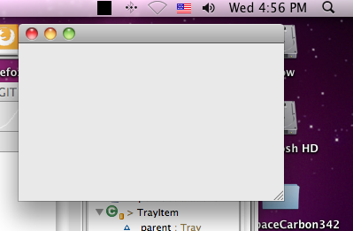
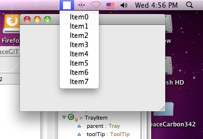
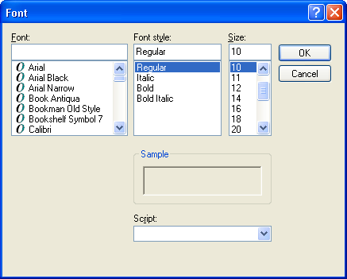
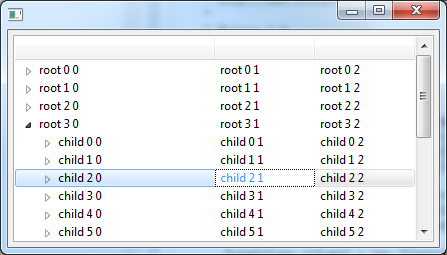
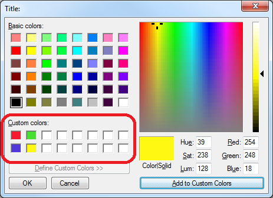

Platform Changes |
| Flexible viewer refactored |
The code driving the debug views (Debug, Variables and Breakpoints) has been substantially refactored to improve its overall quality, stability and
performance.
Some of the more notable changes include:
- There is a 30% improvement in the overall performance of the views
- Two new interfaces have been added to the provisional API:
IModelProxyFactory2 and ITreeModelViewer
- The Copy and Find actions have been re-written to work better with the virtual views
- A new viewer filter extension has been added to
TreeModelViewerFilter, mitigating scrollbar presentation issues
The complete list of changes can be found here.
|
| RelaunchLastAction has been made API |
The internal class RelaunchLastAction has been promoted to API and can be found in the
org.eclipse.debug.ui.actions package.
|
| Add new expression image constant has been made API |
The constant IDebugUIConstants.IMG_OBJ_ADD_NEW_EXPRESSION has been added to API to allow consumers who
extend or use the Expressions view look-and-feel to use the Add New Expression icon
( ). ).
|
| Toggle breakpoints target manager has been made API |
The interface org.eclipse.debug.ui.actions.IToggleBreakpointsTargetManager has been made API to allow clients
access to known IToggleBreakpointTargets. The new API can be accessed via
org.eclipse.debug.ui.DebugUITools#getToggleBreakpointsTargetManager()
|
| BreakpointTypesContribution has been made API |
The class org.eclipse.debug.ui.actions.BreakpointTypesContribution has been added to API. This class
can be reused by clients to add a breakpoint type action in the editor gutter context menu to match the action(s) that appear in the
Run > Breakpoint Types menu.
|
| Find action can be customised in Variables view specialisations |
Consumer now have the ability to completely override the behaviour of the Find... action in the Variables view and any of
its sub-classes, e.g. Expressions view, Modules view, etc.
To replace the default Find... actions clients must provide an adapter for the
interface org.eclipse.debug.internal.ui.viewers.model.provisional.IViewActionProvider.
For more information see the Javadoc for org.eclipse.debug.internal.ui.viewers.model.provisional.IViewActionProvider
with an example available in the org.eclipse.debug.examples.ui bundle found in the Platform Debug Git repository.
|
| Git migration |
During this release cycle, the Eclipse and Equinox projects migrated their source control systems to Git.
The new Git repositories are now available for developers to clone or fork:
|
Equinox Changes |
| New OSGi console |
This release includes a brand new OSGi console based on the Apache Felix Gogo project.
In previous releases the Equinox framework contained a built-in OSGi console.
This console allows you to interact with the OSGi framework and execute commands
on the running instance of the framework. For example, it can be used to install bundles
or to get a list of currently installed bundles. The built-in console is convenient because
it is always available without needing to install extra bundles, but it is also limited
because the framework itself must contain all the functionality of the built-in console.
The Apache Felix Gogo project has developed an advanced shell for interacting with OSGi frameworks.
Instead of continually enhancing the built-in Equinox Framework console, a new external Equinox
Console bundle has been created that uses the Apache Felix Gogo bundles. The new Equinox Console
bundle continues to provide support for the Equinox Console APIs (package
org.eclipse.osgi.framework.console). It also adds many new enhancements which are
possible through the use of the Gogo shell. This includes features such as tab completion,
command history, piping, grep, telnet and ssh connections, and more. Type help on the console
to see a list of available commands, or help <command-name> for information on
how to use each command.
|
| Update to Jetty 8 and Servlet 3.0 |
The Equinox HTTP service implementation is now using Jetty 8 as the
web container to support Servlet 3.0 and JSP 2.2. The Equinox HTTP
service is required to host the Eclipse user assistence web context
for serving up help content.
For the Juno release, Equinox will no longer support the use of older
Jetty implementations and we are no longer shipping Jetty 6. The
Equinox HTTP service implementation will no longer work with the
Servlet 2.5 and JSP 2.1 APIs. Also note that the
Jasper and expresson language implementation bundles
have changed in order to support the Servlet 3.0 and JSP 2.2
specifications. The following bundles have been removed:
- org.apache.jasper
- org.apache.commons.el
- org.mortbay.jetty.server
- org.mortbay.jetty.util
These have been replaced with the following to support Servlet 3.0
and JSP 2.2:
- org.eclipse.jetty.continuation
- org.eclipse.jetty.http
- org.eclipse.jetty.io
- org.eclipse.jetty.security
- org.eclipse.jetty.server
- org.eclipse.jetty.servlet
- org.eclipse.jetty.util
- javax.el
- org.apache.jasper.glassfish
- com.sun.el
|
| Customize storage for preference scopes |
When defining your own preference scope, you can now extend a simple storage
customization class rather than implementing all the preference logic yourself. In this class you
simply define the code to read and write a preference node to whatever backing store you want to use.
This makes it very easy to define a custom preference scope with alternate storage
requirements. For more details see the documentation for the org.eclipse.equinox.preferences.preferences
extension point, or the new API class org.eclipse.core.runtime.preferences.AbstractPreferenceStorage.
|
| OSGi Core Release 5 |
With this release the Equinox OSGi Framework implements the
draft OSGi Core Release 5 (R5) specification. The OSGi Core
R5 specification is an incremental change from the R4.3
specification. A majority of the changes included in
the Core R5 specification are in support of the upcoming
OSGi Enterprise Release 5 specification. A public draft of
the specification will be available
here
by March 26, 2012. The final version will be available
here
shortly after that.
|
| Publisher Support for Negation Requirements |
The p2 publisher can now publish negation requirements.
A negation requirement is a requirement that must not
be present. For example, the Rich Ajax Platform (RAP) can
declare a negation requirement on the Eclipse Platform, meaning
that RAP won't be installable into your IDE.
Negation requirements are specified using the p2.inf file.
Details are available on the Wiki
|
SWT Changes |
| Highlight TrayItem Image |
You can now provide a custom image for use as the hightlight image for
a tray item on Cocoa. The highlight image is shown when the tray item is activated.
The default tray item image will be restored when the tray item is deactivated.
Default Tray Item

Highlighted Tray Item

|
| Added support in StyledText to show the scrollbars only when needed |
In the past, when a StyledText was created with scrollbars it would show
them all the time, even when the client area was big enough to show the entire content.
By using setAlwaysShowScrollBars() this behaviour can now be configured so that
instead of showing a disabled scrollbar, the StyledText will only display the scrollbar when needed.
|
| Event type constants in StyledText are now public |
The following event type constants in StyledText have been made public:
- ExtendedModify
- LineGetBackground
- LineGetStyle
- TextChanging
- TextSet
- VerifyKey
- TextChanged
- LineGetSegments
- PaintObject
- WordNext
- WordPrevious
- CaretMoved
This allows these constants to be used with Widget#isListening() to verify if a
listener handler was added for any event type in StyledText.
|
| Default Browser renderer is now configurable |
The native renderer that is used for SWT.NONE-style browsers can now be
configured by setting a Java property. This is particularly important for applications
that create browsers with a specific native renderer style (eg.- SWT.MOZILLA),
in order to avoid conflicts that can occur when multiple native renderers are loaded in
the same process.
For more information on using this new property see
How do I specify the
default type of native renderer that is used by the Browser? .
|
| FontDialog Effects |
New API has been added to FontDialog to prevent the user from selecting font effects,
such as color, underline, strikethrough and shadow.

|
| New Combo API |
Two new APIs have been added to Combo that allow users to get the caret information
in a combo box. Combo.getCaretLocation returns the pixel coordinates of the
caret. Combo.getCaretPosition returns the character position of the caret.
For an example of how to use this API see
Snippet 359.
|
| Tree Cursor |
The new TreeCursor class can be used to enable users to navigate a Tree control's individual
cells, similar to what TableCursor makes possible for Table controls. For an example of
using TreeCursor see Snippet360.

|
| XULRunner 10 |
The SWT browser now supports embedding XULRunner 10.0.x (note that XULRunner versions 4.x - 9.x are not supported).
Apps wishing to use this must ship a XULRunner 10 runtime and explicitly point at it as described in
the FAQ .
|
| Set/get custom colors in ColorDialog |
ColorDialog now supports getRGBs() and setRGBs(RGB []) to allow applications
to retrieve, save, and restore any custom colors that the user selected in the dialog.

|
| BIDI segments on text widget |
The Text widget now supports adding SegmentListener for BIDI support. This allows BIDI ordering to be applied to segments of the text instead of the entire text.
|
| Browser Function Access |
BrowserFunction can now be installed into specific frames.
|
| SWT Runtime introspection |
SWT.isLoadable() can be used to determine whether the SWT implementation can be loaded in the current running environment.
|
| Overlay scrollbars |
Scrollable.getScrollbarsMode() can be used to determine whether the platform shows overlay scrollbars.
|